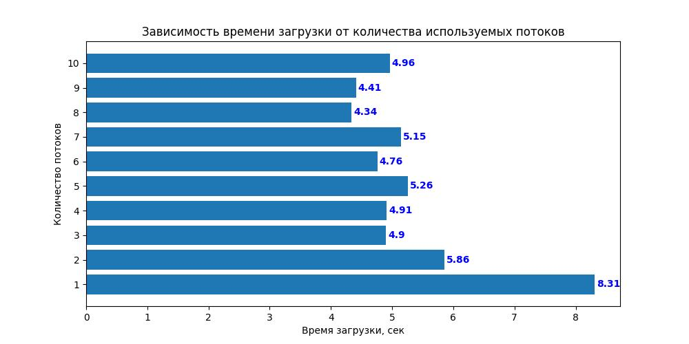
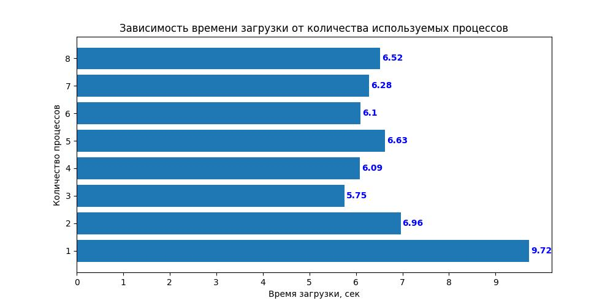
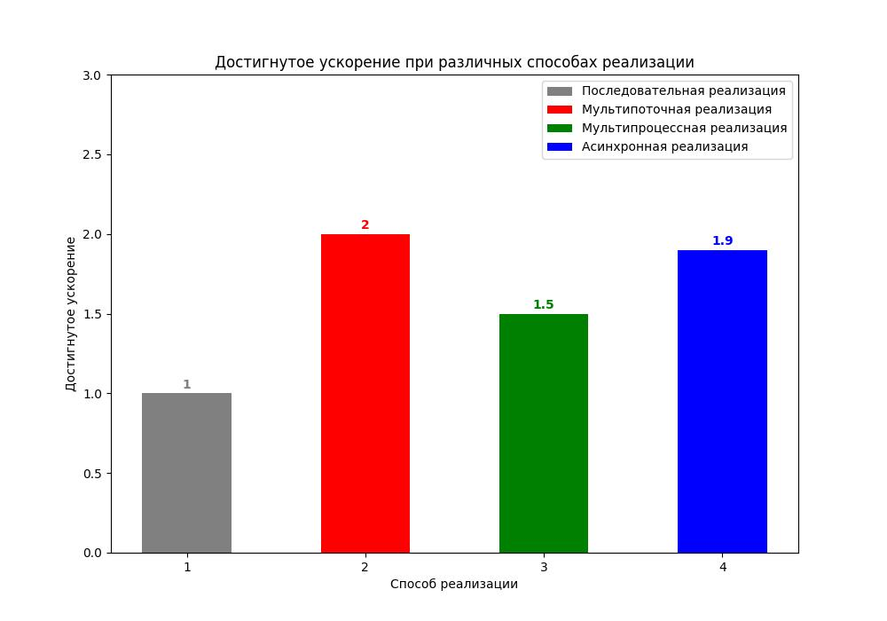
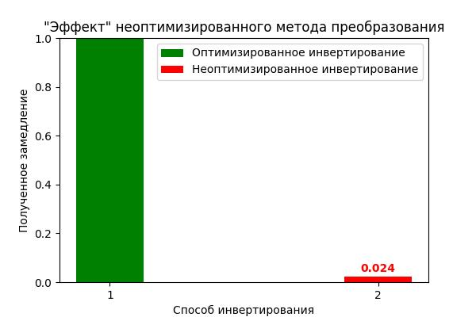
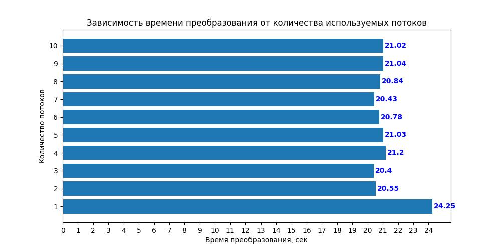
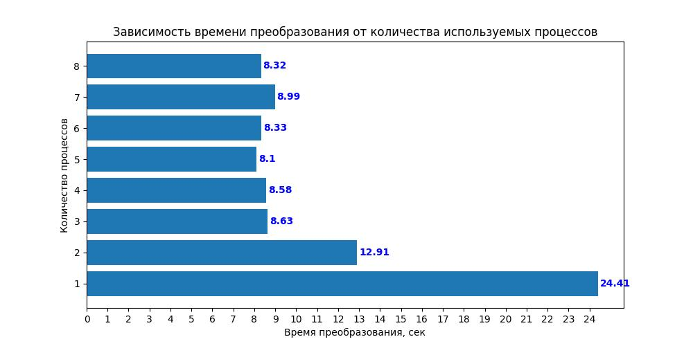
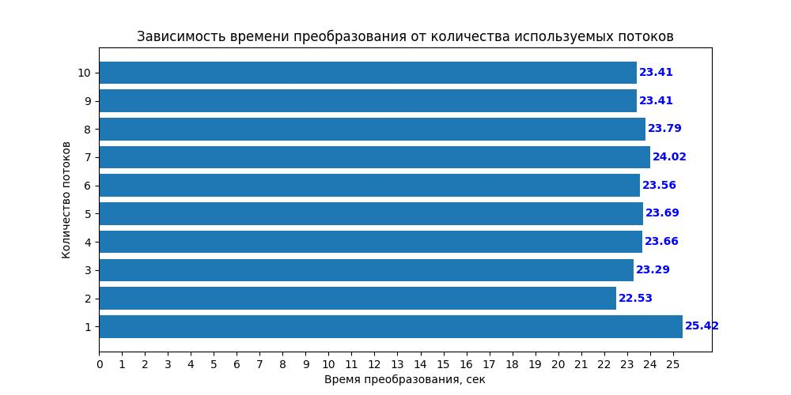
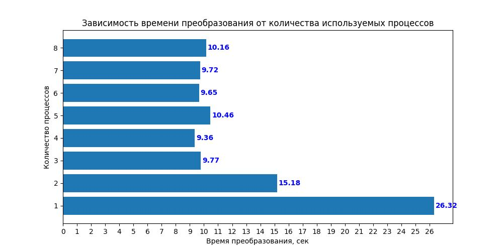
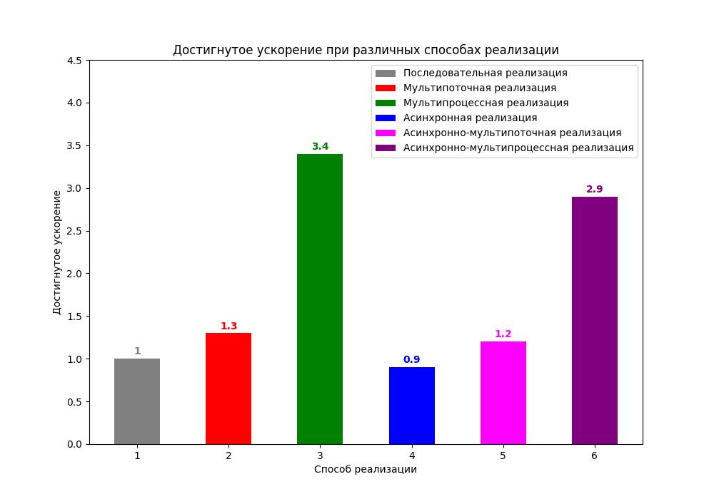

Сравнительный анализ эффективности использования методов
мультипоточного, мультипроцессного и асинхронного программирования
применительно к задачам загрузки изображений из Интернета и их преобразования
Этап I. Загрузка изображений из Интернета
1. Последовательная реализация
Общее время загрузки изображений:
8.87 сек
2. Мультипоточная реализация
| Количество потоков |
Время загрузки, сек |
| 1 |
8.31 |
| 2 |
5.86 |
| 3 |
4.90 |
| 4 |
4.91 |
| 5 |
5.26 |
| 6 |
4.76 |
| 7 |
5.15 |
| 8 |
4.34 |
| 9 |
4.41 |
| 10 |
4.96 |
Минимальное время загрузки изображений:
4.34 сек
Достигнутое ускорение:
2.0
3. Мультипроцессная реализация
| Количество процессов |
Время загрузки, сек |
| 1 |
9.72 |
| 2 |
6.96 |
| 3 |
5.75 |
| 4 |
6.09 |
| 5 |
6.63 |
| 6 |
6.10 |
| 7 |
6.28 |
| 8 |
6.52 |
Минимальное время загрузки изображений:
5.75 сек
Достигнутое ускорение:
1.5
4. Асинхронная реализация
Общее время загрузки изображений:
4.7 сек
Достигнутое ускорение:
1.9
Этап II. Обработка изображений
О важности использования оптимизированных операций
Пример изображения до инверсии цветов:

То же изображение после инверсии цветов:

Общее время инвертирования цветов для всех изображений ("матричный" способ):
4.87 сек
Общее время инвертирования цветов для всех изображений ("пиксельный" способ):
199.79 сек
Полученное замедление:
0.024
Базовое преобразование для исследования
Изображение после "обнуления" канала красного цвета:

1. Последовательная реализация
Общее время преобразования изображений:
27.46 сек
2. Мультипоточная реализация
| Количество потоков |
Время преобразования, сек |
| 1 |
24.25 |
| 2 |
20.55 |
| 3 |
20.40 |
| 4 |
21.20 |
| 5 |
21.03 |
| 6 |
20.78 |
| 7 |
20.43 |
| 8 |
20.84 |
| 9 |
21.04 |
| 10 |
21.02 |
Минимальное время преобразования изображений:
20.4 сек
Достигнутое ускорение:
1.3
3. Мультипроцессная реализация
| Количество процессов |
Время преобразования, сек |
| 1 |
24.41 |
| 2 |
12.91 |
| 3 |
8.63 |
| 4 |
8.58 |
| 5 |
8.10 |
| 6 |
8.33 |
| 7 |
8.99 |
| 8 |
8.32 |
Минимальное время преобразования изображений:
8.1 сек
Достигнутое ускорение:
3.4
4. Асинхронная реализация
Общее время загрузки изображений:
30.8 сек
Достигнутое ускорение:
0.9
5. Асинхронно-Мультипоточная реализация
| Количество потоков |
Время преобразования, сек |
| 1 |
25.42 |
| 2 |
22.53 |
| 3 |
23.29 |
| 4 |
23.66 |
| 5 |
23.69 |
| 6 |
23.56 |
| 7 |
24.02 |
| 8 |
23.79 |
| 9 |
23.41 |
| 10 |
23.41 |
Минимальное время преобразования изображений:
22.53 сек
Достигнутое ускорение:
1.2
6. Асинхронно-Мультипроцессная реализация
| Количество процессов |
Время преобразования, сек |
| 1 |
26.32 |
| 2 |
15.18 |
| 3 |
9.77 |
| 4 |
9.36 |
| 5 |
10.46 |
| 6 |
9.65 |
| 7 |
9.72 |
| 8 |
10.16 |
Минимальное время преобразования изображений:
9.36 сек
Достигнутое ускорение:
2.9
